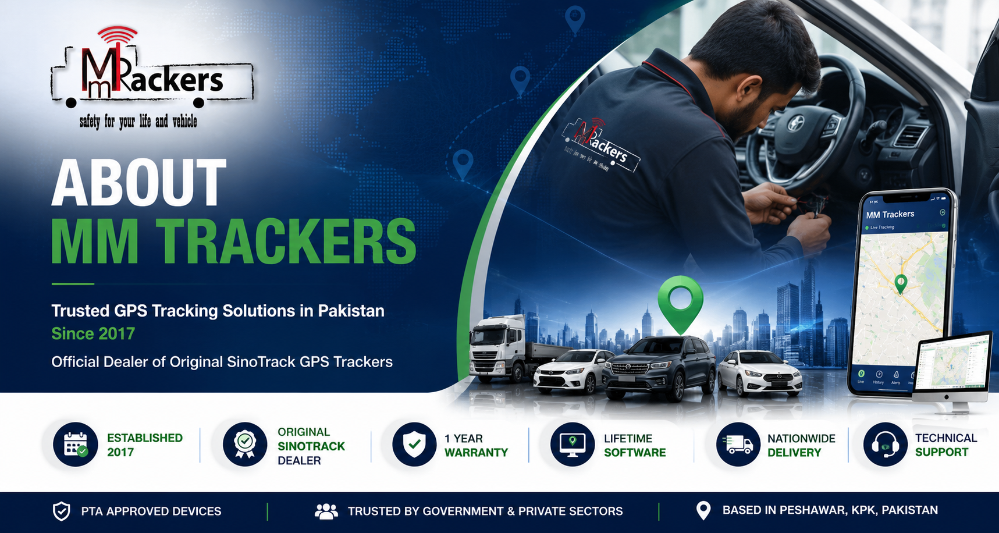

MM Trackers is one of Pakistan's trusted suppliers of Original SinoTrack GPS Trackers, providing reliable GPS tracking solutions for personal vehicles, commercial fleets and government organizations.

MM Trackers was established in 2017 with the goal of providing genuine GPS tracking solutions across Pakistan. We specialize in Original SinoTrack GPS Trackers including vehicle trackers, waterproof trackers, magnetic trackers, portable GPS trackers and 4G LTE tracking devices. We believe in supplying genuine products backed by honest customer support, professional installation guidance and lifetime software access.
We proudly serve government departments, businesses and fleet operators throughout Pakistan.
Our mission is to provide reliable GPS tracking solutions that help customers protect their vehicles, improve fleet management and monitor valuable assets using the latest GPS technology.
Our team is ready to help you select the right GPS tracker for your vehicle or business.